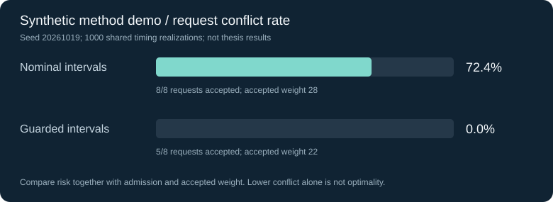

BEHAVIOR MODELING
同样的服务，
为什么选择不同？
区分主动认同与被动依赖，将感知价值、满意度和冲突引入混合选择模型。
79.82 → 84.17%
真实忠诚群体测试集准确率，增加4.35个百分点。
阅读建模思路 ↗我研究出行者为什么作出不同选择、服务干预能否持续有效，以及有限交通资源怎样分配。从行为计量出发，通过智能体仿真和运筹建模，比较不同决策的结果。
以下指标来自博士研究的测试集或模型实验。每个专题说明问题、方法及指标范围。
区分主动认同与被动依赖，将感知价值、满意度和冲突引入混合选择模型。
真实忠诚群体测试集准确率，增加4.35个百分点。
阅读建模思路 ↗以实证参数初始化智能体，对比履约改善、冲突缓解与感知价值强化。
长期仿真中真实忠诚群体占比，不是线上留存率。
阅读策略比较 ↗将不准时风险、群体差异与缓冲机制纳入预约泊位分配。
供需比接近1.0、不准时模型实验中的服务冲突率。
阅读分配方法 ↗8个合成预约请求、2个泊位，相同随机扰动下比较名义分配与带缓冲分配。只使用Python标准库。
python examples/parking_allocation_demo.py这是本次新增的方法演示，不复现论文实验。需要同时看冲突率、接纳量与接纳权重。
查看代码与实验设计 ↗